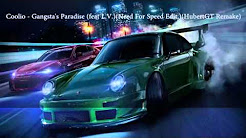
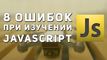
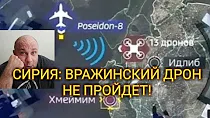

YouTube მიქსებისიმღერაზე ან შემსრულებელზე დაფუძნებული უწყვეტი დასაკრავი სიები

მიქსი — Coolio - Gangsta's
50+
ყველას დაკვრა
მიქსი — Coolio - Gangsta's
Paradise (feat L.V.)(Need For...
50+
ყველას დაკვრა
მიქსი — Queen - We Will Rock
You (Official Lyric Video)
50+
ყველას დაკვრა
მიქსი — Eminem Lose Yourself
HQ Lyrics
50+
ყველას დაკვრა
მიქსი — Michael Jackson "Billie
Jean" 30th Anniversary Madiso...
50+
ყველას დაკვრა
მიქსი — პოპ-მუსიკა
რეკომენდირებული

7:32
Блондинка в вагоне такое
сделала
На одной из остановок заходит...
34K views
•
4 days ago
13:32
Золотов съехал с
сатисфакции
Полит SUN 2.0 [̲̅Y̲̅σ̲̅υ̲̅т̲̅υ̲̅b̲̅е]
15 ათ. ნახვა
•
3 საათის წინ
3:53
Imagine Dragons - Zero
(From the Original Motion...
ImagineDragons
5.2 მლნ. ნახვა
•
2 დღის წინ

8 Ошибок при изучении
6:09
8 Ошибок при изучении
JavaScript
Web Developer Blog
129 ათ. ნახვა
•
1 წლის წინ
3:09
2CELLOS - Pirates Of The
Caribbean [OFFICIAL VIDEO]
2CELLOS
1.4 მლნ. ნახვა
•
6 დღის წინ
5:13
10 пасов которые
НАМНОГО красивее чем...
Апельсин
123 ათ. ნახვა
•
2 თვის წინ
10:32
GLITCH | SPECIAL PACK
ILIMITADOS FUT 19...
Seba FUT
117 ათ. ნახვა
•
2 კვირის წინ
19:54
Faker vs. Bjergsen |
Quarterfinals | 1v1...
LoL Esports
1.6 მლნ. ნახვა
•
10 თვის წინ
10:09
Leo Rank ACE Trong 3 Ngày -
H∆∞·ªõng D·∫´n C√°ch 1 - Pubg...
Coci Coci
2.9 ათ. ნახვა
•
3 კვირის წინ
4:38
Люцифер встречает Бога.
Разговор Бога и Люцифера
SALAVDI 2.0
232 ათ. ნახვა
•
2 კვირის წინ
3:30
Imagine Dragons - Believer
(8D AUDIO)
8D TUNES
20 მლნ. ნახვა
•
2 თვის წინ
17:53
JavaScript для начинающих
| #12 Числа и методы чисел
Magisters | Обучение современн...
10 ათ. ნახვა
•
2 წლის წინ
3:09
Bon Jovi - Bed Of Roses
(Matthias Nebel) | The Voic...
The Voice of Germany - Offiziell
1.2 მლნ. ნახვა
•
1 კვირის წინ
ახლახან ატვირთულითქვენთვის რეკომენდებული ვიდეოები
6:44
Что происходит в
Ингушетии? (продолжение)
Frontier
351 ათ. ნახვა
•
1 დღის წინ
üî• –°—Ç—Ä–∏–º –§–û–†–¢–ù–ê–ô–¢! üíÄ
–ö–æ—Å–∞ в –º–∞–≥–∞–∑–∏–Ω–µ?!...
DenJahMan
103 უყურებს
პირდაპირ ეთერშია

23:29
Распаковка iPhone XR всех
цветов
Wylsacom
2.1 მლნ. ნახვა
•
2 დღის წინ
10:19
17 БЕЗУМНЫХ ВЕЩЕЙ С
ALIEXPRESS, ОТ КОТОРЫХ...
Alex Vikodinov
434 ათ. ნახვა
•
6 დღის წინ

ДРОНЫ, ОПЯТЬ! НО,
4:38
ДРОНЫ, ОПЯТЬ! НО,
РОССИЯ СКРЕПНО...
VALERON 2%
25 ათ. ნახვა
•
5 საათის წინ